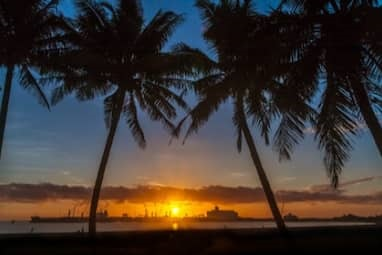

Maholinarina Sariaka ANDRIAMELINTSOA | WDD 130 - Explore Beautiful Toamasina
Toamasina, also known as Tamatave, is a bustling port city on the eastern coast of Madagascar and serves as the country's main gateway for international trade. Surrounded by lush tropical vegetation and situated near the Indian Ocean, it features a humid climate and vibrant cultural diversity. The city is known for its scenic waterfront, colonial architecture, and proximity to beautiful rainforests and national parks.
